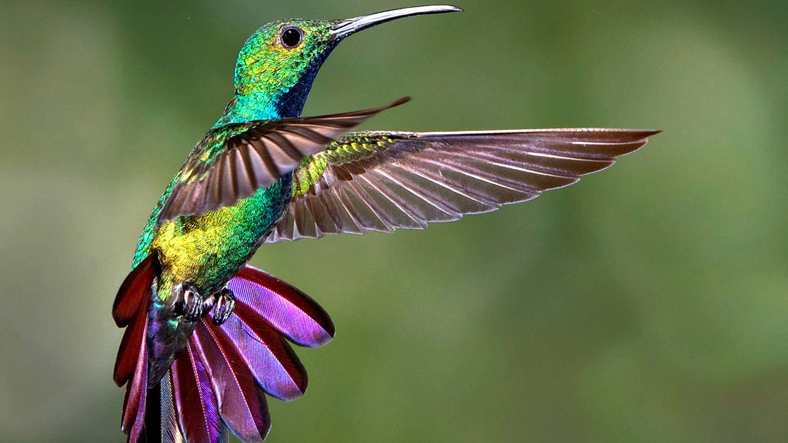

Pajaros del jardin
Los pajaros del jardin estan hace bastante tiempo en el botanico y se han reproducido a lo largo del tiempo adaptaron un estilo de vida muy pacifico dentro del jardin
Gorrion Comun
(Passer domesticus)
Es un pájaro inteligente, vivaracho y curioso. Es sedentario y gregario. Siempre se encuentran en lugares habitados, como calles, parques o jardines, así como huertas y granjas.
Paloma Comun
(Columba livia)
Una de las aves mas comunes no solo en los botanicos si no en las plazas y en las ciudades son las palomas comunes donde estan siempre en cualquier lado y se han acostumbrado a vivir con el humano alrededor de años y años
El Colibri
(Colibri coruscans) Los colibríes son seres nativos de casi todos los ecosistemas, bosques templados, selvas húmedas, desiertos, incluso en los picos más montañosos y altos de todo el continente americano.